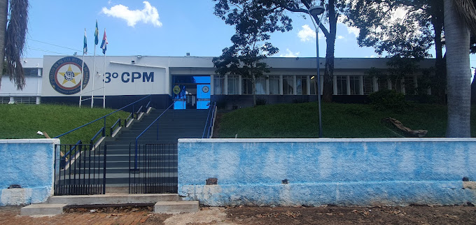

3° Colégio da Polícia Militar
O 3º Colégio da Polícia Militar do Paraná foi criado como um órgão de apoio da Polícia Militar do Paraná e como um estabelecimento de ensino formal, pelo Decreto Governamental nº 11.334 de 15 de outubro de 2018 , publicado no Diário Oficial nº 10.294 da mesma data, iniciando oficialmente suas atividades no dia 19 de fevereiro de 2018.
Com sede em Cornélio Procópio, Estado do Paraná, o 3º Colégio da Polícia Militar do Paraná (3º CPM) .O 3º CPM é um órgão de apoio de ensino diretamente subordinado à Diretoria de Ensino e Pesquisa, que faz parte dos órgãos de direção que compõem o Comando-Geral da Polícia Militar do Paraná. O Comandante é o diretor do colégio e as demais funções estão de acordo com a legislação vigente. O 3º CPM é um estabelecimento de Ensino Regular, compreendendo o Ensino Fundamental II (6º ao 9º ano) e Ensino Médio (1º ao 3º ano). O colégio funciona em dois turnos, manhã e tarde. O ingresso dos alunos se faz por meio de Teste Classificatório, conforme consta no Regulamento Interno do colégio.